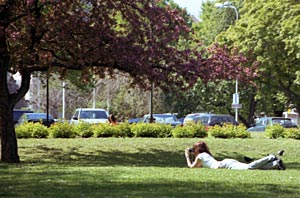
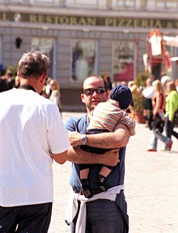
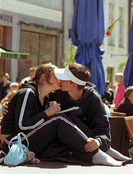
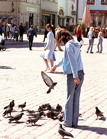
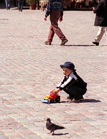
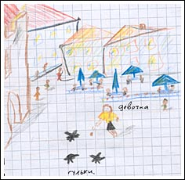
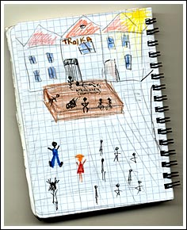
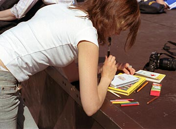

Лица людей. Комплексы фотографа. Прогулка с Александрой. Исцеление. Вид на ратушную площадь.
Утро второго дня было солнечным и жарким. Я не хотел снова выбираться в город, и даже искал по карте какое-либо недалёкое место с потенциальными кадрами. Но Ленкина мама сказала, мол сегодня начинается праздник города и в старом Таллинне будут всяческие гуляния.
Гуляний я так и не увидел, но оказавшись в городе решил запечатлеть серию фотографий под кодовым названием: «счастливые солнечные лица людей».
Ага, щас! Разбежался и запечатлел. (©)
Вобще-то нельзя сказать, что я человек очень замкнутый и не общительный. Но что-то подобное всё же есть. Как ни пытался я заставить себя фотографировать незнакомых людей, случайных прохожих, проходящих девушек — я не мог нажать на кнопку. Не мог и всё.
Что-то в моей психике заклинило. Я даже не смог подобрать оправдание такому поведению — смущение, страх, другие какие-то глупости. В какой-то момент я прятался в тёмной подворотне с телевиком, выжидая жертву на выбранном фоне. И тоже безрезультатно. Нет, я мог нажать кнопку физически, но зачем мне нужна такая «паппарацци-фотография»? К полудню я оставил эту затею. Не то чтобы впал в депрессию, а просто пришёл к результату, что не моё это. Что у меня, зато получаются другие кадры и жанры.
И вдруг появилась фея.
В том самом, полюбившемся мною, парке у «viru», я познакомился с очаровательной Александрой — девушка, одиноко сидевшая на траве с фотоаппаратом и фотографирующая птиц (я подумал тогда, что птиц).

Александра за минуту до знакомства.
Тут я уже не смог удержаться от «паппарацци-фотографии».
Познакомившись с девушкой, я рассказал ей свою смешную проблему. Вернее с самого начала я подошёл с вопросом-просьбой, сфотографировать её саму, но это был только предлог. У меня была надежда, что если кто-то составит мне компанию в прогулках по городу, то это поможет мне справиться с собой. Это предложение я и рассаказал Александре…
Я тогда не знал, что она фея.
Поэтому и был ошарашен её согласием.
Я не разглядел издалека, насколько она красива.
Поэтому я и потерял на мгновение дар речи.
…
После прогулки по городу с Александрой моя психологическая проблема, описанная выше, полностью испарилась. Я действительно смог избавиться от каких-то сомнений в себе. Я стал улыбаться людям в момент, когда направляю на них обьектив, и обнаружил, что они улыбаются мне в ответ. Когда я увидел эти улыбки — я тогда и понял насколько неправильны были мои страхи.
Дошёл до того, что образно говоря, хватал случайного человека: «Стой! Улыбайся! Щёлк! Свободен!»
Кстати со «стой-улыбайся!» вышла занятная история. На панораме Таллинна Саша сфотографировала колоритного паренька со смуглой кожей и пышной причёской. Сфотографировала с громким, отчётливым щелчком, на который и я и этот парень сразу же обернулись. Все трое улыбнулись, но парень вроде как смутился.
С этим парнем я тем же вечером ехал одним автобусом в Ригу. Он тоже заметил меня и пересел на другое кресло за моей спиной (ммм.. может и вправду он настолько меня испугался). А когда я его же встретил на следующий день уже в Риге, я не смог среагировать иначе, чем согнуться от приступа смеха.
А фотографировать людей я теперь умею. Вернее сказать «я могу» или «я способен» фотографировать случайных прохожих. Фотографии отснятые в той прогулке не вызывают у меня восторга, но это эффект эйфории. Из-за которого во время съёмок я упивался самими съёмками, забывая о прочие правила фотографии. Я проверил потом в Риге — не вернулось ли ко мне прежнее состояние — и всё в порядке. Я могу! Через несколько съёмок, я научусь чётко обдумывать снимаемый кадр и получить отличные фотографии для серии под кодовым названием: «счастливые солнечные лица людей».




Юная девушка, преподнесла в тот день мне хороший урок. Урок, который я не забуду пока буду продолжать заниматься фотографией. И возможно я, с её помощью, преодолел труднейший шаг в своём фото-развитии. Я не знаю, осознанно ли она совершала поступки, заставившие меня самому начать съёмки, или же мне просто было достаточно одного-её присутсвия и покровительства, для того чтобы излечиться. Это мне не важно. Я глубоко благодарен Александре за тот день.
Я утверждаю и буду утверждать, что Александра — фея, являющаяся фотографам.

Вид на ратушную площадь,

...и если оглянуться за спину.
Во всей этой истории есть ещё один немаловажный момент. Если абстрагироваться от всех этих фотографий и фотоаппаратов, то он звучит следующим образом:
Я познакомился с очаровательной девушкой. (смайлик)
